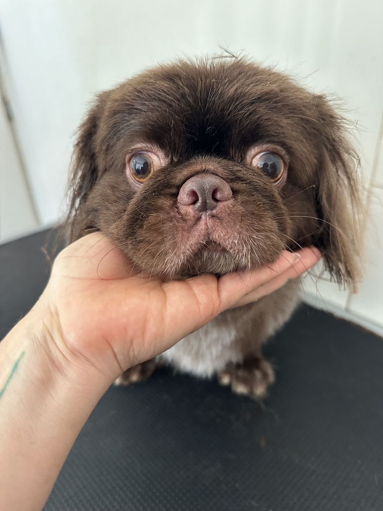

המגע שלי זה היופי שלכם My touch is your beauty
סימה בסקין, ספרית כלבים וחתולים בקריית טבעון ובחיפה. Sima Beskin grooms dogs and cats in Kiryat Tivon and Haifa.
4.9 בגוגל, מתוך 42 ביקורותon Google, from 42 reviews

בלי רצועה. בגובה של הכלב.No leash. At the dog's height.

מסבך לפרווה רכהFrom tangle to soft coat
פרווה שנדחסה לקשרים, ועוד קצת מהשטח של טבעון בפנים.A coat pressed into knots, with a little of Tivon's outdoors caught inside. מסרקים לאט, שורה אחרי שורה, עד שהקשר משתחרר.Combed slowly, row by row, until each knot lets go. מים, שמפו עד העור, ושטיפה עד שהקצף יורד.Water, shampoo down to the skin, and a rinse until the lather is gone. ייבוש מצד לצד, והפרווה מתרוממת.Dried from side to side, and the coat lifts. ובסוף המספריים: קו אחד רך מסביב לכלב.Last, the scissors: one soft line around the dog.
העבירו את העכבר על הפרווה כדי לסרקהחליקו הצידה על הפרווה כדי לסרק Run your mouse over the coat to comb itSwipe sideways across the coat to comb it
0 / 0 קשרים נפתחוknots worked out
איור להמחשהIllustrationלפני ואחריBefore and after
גררו את המסרק על התמונה.Drag the comb across the photo.

 לפניBefore
אחריAfter
לפניBefore
אחריAfter

 לפניBefore
אחריAfter
לפניBefore
אחריAfter

כל טיפול לפי הכלב והפרווה שלוEvery groom fits the dog and its coat
גם חתולים, וכל חיה פרוותית.Cats too, and any furry animal.
- טיפול יופיBeauty groom
- סירוקBrushing
- פתיחת קשריםDe-matting
- מריטהHand-stripping
- דילולThinning
- תספורתHaircut
- תספורות גזעBreed cuts
- תספורת ביתEasy-care home cut
- טיפול גוריםPuppy care
- מסכות לפרווהCoat masks
- קיצוץ ציפורנייםNail trims
- ריקון בלוטותAnal glands


הלקוחות הפרוותייםThe furry clientele
פודלים, שיצו, טרייר, ספנייל, פומרניאן, ומי שרק יצא מהאמבטיה.Poodles, Shih Tzus, terriers, a spaniel, a Pomeranian, and someone fresh out of the bath.


ביקורותReviews
4.9
בגוגל, מתוך 42 ביקורות. ועוד 30 המלצות בפייסבוק.on Google, from 42 reviews. Plus 30 recommendations on Facebook.
״סימה סימה סימה. האחת והיחידה. Free spirit מיוחדת מלאת אנרגיה כמו כדור אש. ספרית סופר מקצועית.״
“Sima Sima Sima. The one and only. A special free spirit, full of energy like a fireball. A super-professional groomer.”
״כבר שמונה שנים שאני מספר את הכלבה שלי רק אצל סימה. סימה מאוד מקצועית, אמינה, אוהבת חיות ורואים את זה בכל תספורת.״
“For eight years I've had my dog groomed only by Sima. Very professional, reliable, loves animals, and you can see it in every haircut.”
״סימה מאוד חברותית ואדיבה ועדינה ומאוד מקצועית עם חיות, ומקס לא עשתה בעיות בכלל.״
“Sima is very friendly, kind and gentle, and very professional with animals, and Max gave no trouble at all.”
״טיפלה במסירות ובמקצועיות בכלבה ופינקה בתספורת מהממת… יצאנו מרוצים עד אין קץ וכך גם הכלבה שלנו.״
“She cared for our dog with devotion and skill and spoiled her with a gorgeous cut… We left endlessly happy, and so did our dog.”
״מספרה מהממת, ספרית מקצועית ומאוד אדיבה. חוויה מעולה לבעלי החיים וגם לבעליו.״
“A gorgeous grooming salon, a professional and very kind groomer. A great experience for the animals, and for their owners too.”
ציטוטים מתוך ביקורות בגוגל, בקיצור.Quoted from Google reviews, shortened; English translated from Hebrew.
בחנות החיות בזבולון 1At the pet shop, 1 Zevulun St.
קריית טבעון. סימה עובדת בתוך החנות.Kiryat Tivon. Sima works inside the shop.
זבולון 1, קריית טבעון (בתוך חנות החיות)1 Zevulun St., Kiryat Tivon (inside the pet shop)
054-214-4205